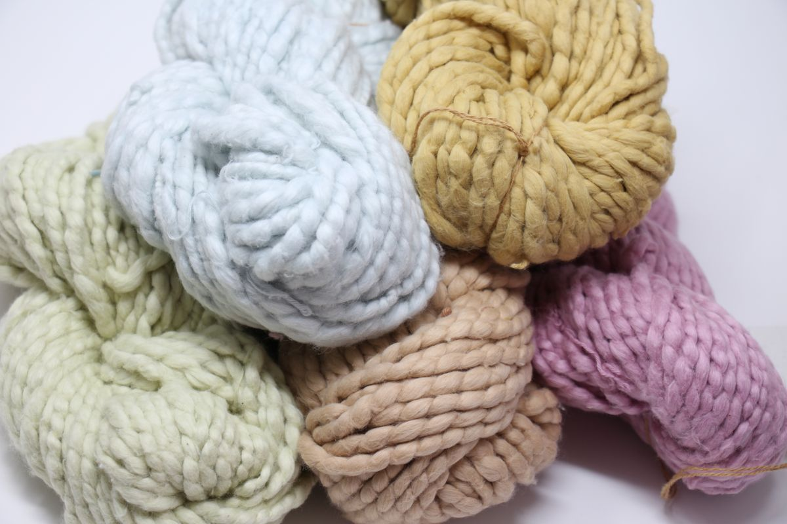

Premium Organic Cotton Yarn manufactured using eco-friendly processes. Available with GOTS, OCS and BCI certifications for sustainable textile applications worldwide.
Organic
Countries
Certified
Organic cotton yarn options for buyers seeking sustainable textile material according to specific requirements.
Organic cotton yarn options available according to buyer requirements.
Certification requirements can be discussed according to the specific product and order.
Count options available according to product specification.
Packing options arranged according to buyer and shipment requirements.
Garments, knitting, weaving and sustainable textile applications.
International buyer enquiries and shipment coordination.
Share your required specification and quantity to receive a quotation.
Request a QuotationWe supply premium certified Organic Cotton Yarn suitable for sustainable textile and garment manufacturing.
Eco-friendly yarn produced from certified organic cotton fibres.
Global Organic Textile Standard certified premium yarn.
Organic Content Standard certified yarn for export markets.
Better Cotton Initiative yarn for sustainable production.
Extra-long staple premium cotton yarn with exceptional softness.
High-quality Egyptian cotton yarn for luxury fabrics.
Ethically sourced cotton yarn supporting sustainable farming.
Regenerative agriculture certified cotton yarn.
Custom counts and packing according to buyer requirements.
Organic Cotton Yarn is widely used for sustainable fashion and premium textile products.
Eco-friendly apparel manufacturing.
Premium knitted fabrics.
Luxury woven textiles.
Bedsheets, towels & blankets.
Soft and skin-friendly fabrics.
Supplying worldwide markets.
Organic Cotton Yarn available in various counts for knitting and weaving industries.
We provide secure export packaging and reliable global shipping for Organic Cotton Yarn.
| Specification | Details |
|---|---|
| Packing Type | PP Bags / Carton Boxes |
| Cone Weight | 1.67 Kg / 1.89 Kg |
| MOQ | 1 × 20 FT Container |
| Loading Capacity | Approx. 19–21 MT |
| Country of Origin | India |
Durable export packaging with moisture protection.
Fast and reliable shipment through major Indian ports.
Serving textile buyers across global markets.
Every batch of Organic Cotton Yarn is carefully inspected to ensure purity, consistency and sustainability.
Produced using certified organic cotton.
GOTS, OCS and BCI certified production.
Every lot is tested before export.
Secure packaging for safe transportation.
Reliable production and logistics management.
Long-term partnerships with buyers worldwide.
Trusted manufacturer and exporter of premium Organic Cotton Yarn for global textile industries.
Environment-friendly production with certified organic fibres.
Modern spinning technology for consistent yarn quality.
Exporting premium yarn to international buyers.
Export-grade packing for safe delivery.
Strict quality inspection at every stage.
Professional assistance from inquiry to shipment.
Our Organic Cotton Yarn complies with internationally recognized sustainability and quality standards.
Global Organic Textile Standard
Organic Content Standard
Better Cotton Initiative
Quality Management System
International Quality Standards
Trusted by Global Buyers